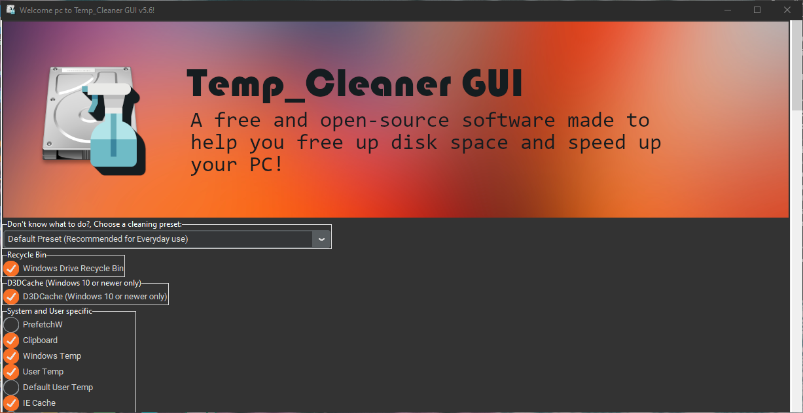
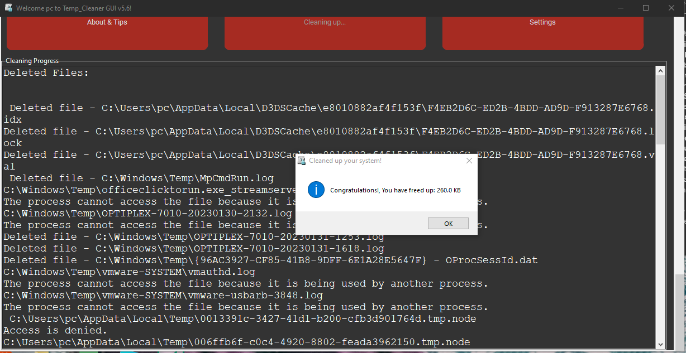
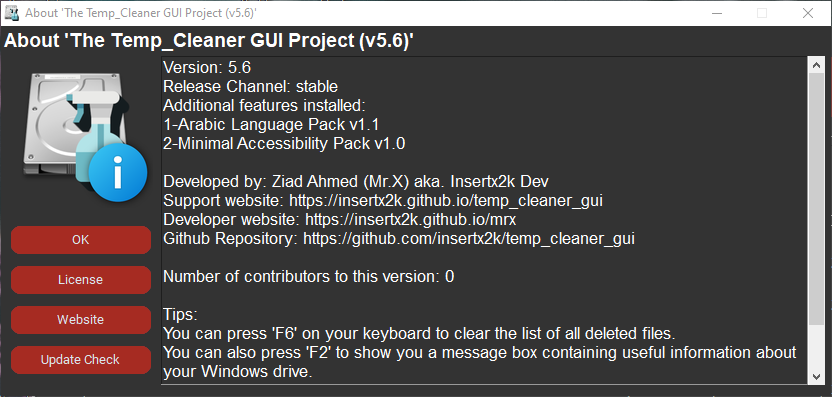
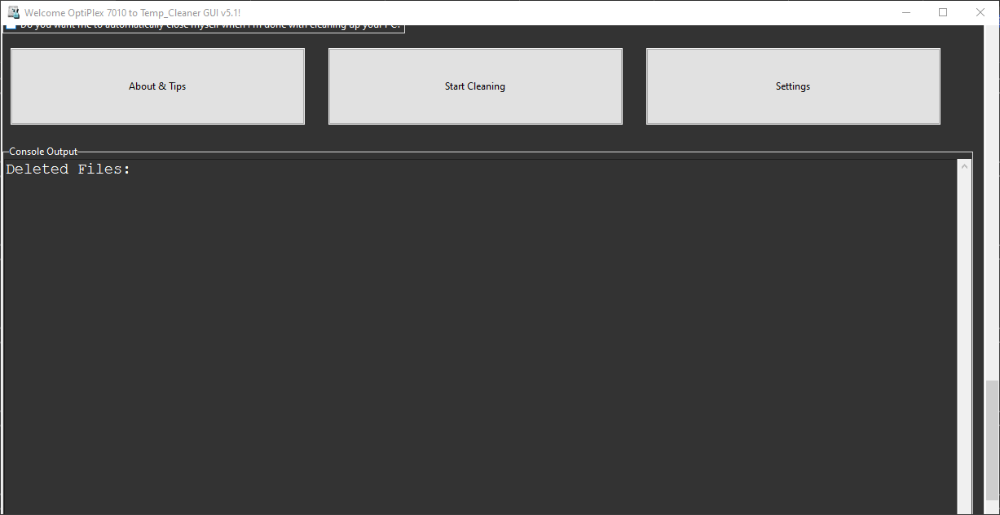

Free up the disk space you didn't know you could.
Temp_Cleaner GUI is a free, open-source cleaner for Windows. Tick the areas you want cleaned, then click "Start Cleaning".
Works on Windows 7 SP1[2] through Windows 11, and Windows Server 2012 onwards.
Why Temp_Cleaner GUI?
- Free and open-source
- Share it and use it for both personal and commercial purposes. No ads in the interface[1].
- Easy to use
- Check the areas you want to clean and click "Start Cleaning". That's all.
- Supports most Windows versions
- Compatibility is a top priority, so the vast majority of Windows desktop versions are supported.
- Cleans safely
- Built so it doesn't hurt the performance or stability of your PC or the programs on it.
- Cleans what other cleaners can't
- Many cleaning options that aren't available in most popular PC cleaners.
- Cleans up your Android Smartphone too![0]
- Thanks to the open nature of Android[0], and my expertise in Android[0] modding, this app is one of the few (if not the only one) that can also clean up your Android[0] smartphone alongside your PC!
- Respects your privacy
- No personal identification data is collected. See exactly what is.
- Built-in updater
- Introduced in v5.6-stable. Turn on Automatic Update Check in Settings and you'll be told when an update is out.
- Active support community
- Get help on the dedicated Discord server.
- Trusted by reputable software sites
- Listed on Softpedia, MajorGeeks and OlderGeeks.
See it in action
Screenshots




What people say
Temp_Cleaner GUI provides you with a user-friendly way to get rid of unnecessary files that take up space and affect the performance of your computer in a safe manner.Softpedia
Temp_Cleaner GUI can clean many files that other drive cleaners can't.MajorGeeks
Powerful yet free and open-source PC cleaner.OlderGeeks.com


Help keep it free and ad-free
Temp_Cleaner GUI is free and open-source, so it depends on donations. They help pay for PC upgrades to keep up with the future of software, and for better web hosting.
Can't donate? You can still help:
- Coders: show your skills in the GitHub repository.
- Not a coder? Send ideas, logos or other media on Twitter or the Discord server.
[0] - This feature works by integrating a 3rd-party app, the Android Debug Bridge, that communicates with your Android Smart Phone via the proprietary ADB protocol.
- Your Android smartphone must be running at least Android 7.0 for the cleanup via USB debugging feature to work, or Android 11 (or newer) for the cleanup via Wi-Fi debugging feature (over the network cleanup).
- Android and Android platform tools are separate products authored by Google, They're not owned nor are developed by Ziad (Mr.X)
[1] - Ads for 3rd-party apps will never exist on the interface of this app, but ads for my apps will.
[2] - Windows 7 Service Pack 1 remains supported for as long as all dependencies remain compatible with it.
- For Windows 7, you need the Service Pack 1 update along with the IE 11 (Internet Explorer 11) update for it to work.
- ADB and the Android Smart Phone cleaner feature may not work on Windows 7.